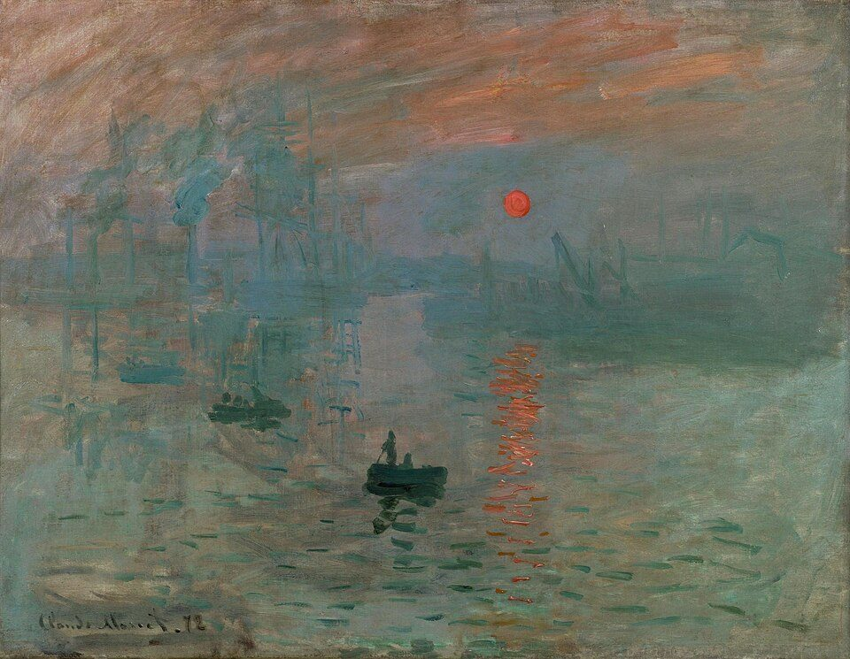
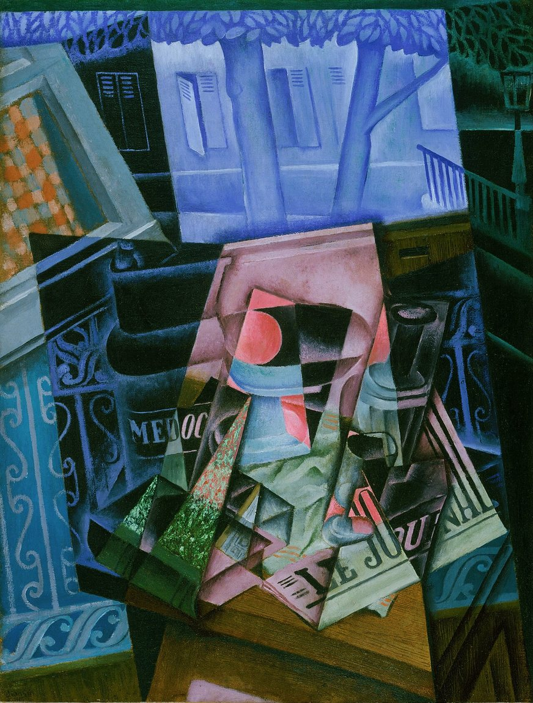
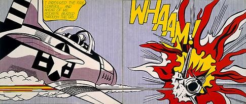

Көркем еңбек · 1-бөлім · Бейнелеу өнеріArt & Craft · Section 1 · Visual ArtsХудожественный труд · Раздел 1 · Визуальное искусство
🎨 Заманауи бағыттар. Қазақстан суретшілері
🎨 Modern Movements. Artists of Kazakhstan
🎨 Современные направления. Художники Казахстана
Импрессионизмнен инсталляцияға дейін: өнер «не үшін» өзгерді.From Impressionism to installation: how and why art changed.От импрессионизма до инсталляции: как и почему изменилось искусство.
XIX ғасырдың соңына дейін суретшілер әлемді мүмкіндігінше дәл әрі әдемі бейнелеуге ұмтылды. Бірақ фотография пайда болды — ол шындықтың дәл «көшірмесін» тезірек әрі дәлірек жасады. Сонда өнерге еркіндік келді: камера істей алатын нәрсені қайталаудың қажеті не? Суретшілер жаңаны іздей бастады — заттың сыртқы түрін ғана емес, әсерді, сезімді, идеяны жеткізуді.Until the late 19th century artists tried to depict the world as accurately and beautifully as possible. Then photography appeared — it made an exact "copy" of reality faster and better. Art was set free: why repeat what a camera can do? Artists began to search for something new — to convey an impression, a feeling, an idea, not just outward appearance.До конца XIX века художники стремились изобразить мир как можно точнее и красивее. Но появилась фотография — и она делала точную «копию» реальности быстрее и лучше. Искусство получило свободу: зачем повторять то, что умеет камера? Художники начали искать новое — передавать впечатление, чувство, идею, а не только внешний вид.
Осылай ХХ ғасыр өнері дүниеге келді — әрқайсысы «өнер деген не?» деген сұраққа өзінше жауап берген батыл бағыттардың тізбегі.So the art of the 20th century was born — a chain of bold movements, each answering the question "what is art?" in its own way.Так родилось искусство XX века — череда смелых направлений, каждое из которых по-своему отвечало на вопрос «что такое искусство?».
Басты өзгерісThe key shiftГлавный сдвиг
«Әлемді бейнелеуден» → «идеяны жеткізуге».From "depict the world" → to "express an idea".От «изобразить мир» → к «выразить идею».
Бағыттар лентасыA Timeline of MovementsЛента направлений
🔍 Үлкейту үшін кескінді басыңыз.🔍 Tap an image to enlarge it.🔍 Нажмите на изображение, чтобы увеличить.

ИмпрессионизмImpressionismИмпрессионизм
Клод Моне · «Впечатление. Восход солнца», 1872
1860–1880-е · 1860s–1880s
ИмпрессионизмImpressionismИмпрессионизм
Суретшілер жарық пен ауаның лезде әсерін ұстау үшін шеберханадан табиғатқа (пленэр) шықты. Таза түсті жылдам, бөлек жағылған бояумен салды; көлеңкелер қара емес, түрлі-түсті болды. Атауы Монеnің «Әсер. Күннің шығуы» картинасынан шыққан.Painters left the studio to work outdoors and catch a fleeting impression of light and air. They used quick, separate strokes of pure colour, and shadows became coloured rather than black. The movement is named after Monet's "Impression, Sunrise".Художники вышли из мастерских на пленэр, чтобы поймать мимолётное впечатление от света и воздуха. Они писали быстрыми раздельными мазками чистого цвета, а тени стали цветными, а не чёрными. Название дала картина Моне «Впечатление. Восход солнца».
Белгілері:Traits:Черты:жарық пен ауа, таза түс, бөлек мазок.light & air, pure colour, broken brushwork.свет и воздух, чистый цвет, раздельный мазок.
Келесі буын әсерден әрі қарай кетті: түс пен форманы сезім мен ойды жеткізу үшін қолданды. Ван Гог екпінді, иіріле жағылған бояумен салды; Сезанн табиғаттан қарапайым геометриялық көлемдерді іздеді.The next generation went beyond mere impression: colour and form were used to express feeling and thought. Van Gogh painted in swirling, energetic strokes, while Cézanne searched nature for simple geometric volumes.Следующее поколение пошло дальше впечатления: цвет и форму стали использовать, чтобы выразить чувства и мысли. Ван Гог писал бурными, закрученными мазками, а Сезанн искал в природе простые геометрические объёмы.
Белгілері:Traits:Черты:экспрессивті түс, эмоция, жеке көзқарас.expressive colour, emotion, personal vision.выразительный цвет, эмоция, личное видение.
Суретшілер:Artists:Художники: Винсент Ван Гог, Поль Сезанн, Поль Гоген.

КубизмCubismКубизм
Хуан Грис · «Натюрморт перед открытым окном», 1915
1907–1920-е · 1907–1920s
КубизмCubismКубизм
Зат геометриялық қырларға «бөлшектеніп», бірден бірнеше жағынан көрсетіледі — біртұтас перспектива жоғалады. Осылай суретші заттың көрінісін емес, ол туралы білімін береді.The object is broken into geometric facets and shown from several sides at once — single-point perspective disappears. The artist conveys not the look of a thing, but knowledge of it.Предмет «разбирают» на геометрические грани и показывают сразу с нескольких сторон — единая перспектива исчезает. Так художник передаёт не вид предмета, а знание о нём.
Белгілері:Traits:Черты:геометрия, көп көзқарас, ұстамды түс.geometry, multiple viewpoints, restrained colour.геометрия, множество точек зрения, сдержанный цвет.
Өнер танылатын заттардан мүлде бас тартады. Сурет тек түс, сызық, дақ пен ырғаққа құрылады — дыбыстан жасалған музыка сияқты. Көрермен көңіл күйді тікелей сезінеді.Art abandons recognisable objects entirely. The picture is built only from colour, line, shape and rhythm — like music made of sound. The viewer feels the mood directly.Искусство полностью отказывается от узнаваемых предметов. Картина строится только на цвете, линии, пятне и ритме — как музыка из звуков. Зритель чувствует настроение напрямую.
Белгілері:Traits:Черты:заттар жоқ, таза форма мен түс, ырғақ.no objects, pure form and colour, rhythm.нет предметов, чистые форма и цвет, ритм.
Суретшілер:Artists:Художники: Василий Кандинский, Казимир Малевич, Пит Мондриан.

Поп-артPop ArtПоп-арт
Рой Лихтенштейн · «Whaam!», 1963
1950–1960-е · 1950s–1960s
Поп-артPop ArtПоп-арт
Өнер бейнелерді бұқаралық мәдениеттен алады — жарнама, комикс, тауар, кино. Ашық жалпақ түстер мен көбейту «жоғары» өнер мен күнделікті өмір арасындағы шекараны өшіреді.Art takes its images from mass culture — advertising, comics, products, film. Bright flat colours and repetition erase the border between "high" art and everyday life.Искусство берёт образы из массовой культуры — рекламы, комиксов, товаров, кино. Яркие плоские цвета и тиражирование стирают границу между «высоким» искусством и повседневностью.
Инсталляция · Заманауи өнерInstallation · Contemporary ArtИнсталляция · Современное искусство
Бүгінде ең бастысы — идея. Инсталляция — көрермен ішіне еніп, қатысушыға айналатын заттардан, жарық пен дыбыстан тұратын кеңістік. Қатарында — перформанс, видео-арт, концептуализм.Today the idea matters most. An installation is a space of objects, light and sound that the viewer enters and becomes part of. Alongside it stand performance, video art and conceptualism.Сегодня важнее всего идея. Инсталляция — это пространство из объектов, света и звука, в которое зритель входит и становится участником. Рядом — перформанс, видео-арт, концептуализм.
Белгілері:Traits:Черты:идея техникадан маңызды, кез келген материал, көрермен — қатысушы.idea over technique, any materials, the viewer participates.идея важнее техники, любые материалы, зритель — участник.
Классикалық ↔ Заманауи өнерClassical ↔ Modern ArtКлассическое ↔ Современное искусство
Классическое искусство
Современное искусство
Цель
Точно и красиво изобразить мир
Выразить идею, чувство, поставить вопрос
Форма и реальность
Узнаваемые предметы, реализм, перспектива
Свобода формы, условность, абстракция
Материалы
Холст и масло, мрамор, бронза
Любые: свет, видео, звук, готовые вещи
Роль зрителя
Любуется готовой картиной
Размышляет, иногда становится участником
Классикалық өнер
Заманауи өнер
Мақсат
Әлемді дәл әрі әдемі бейнелеу
Идея мен сезімді жеткізу, сұрақ қою
Форма мен шындық
Танылатын заттар, реализм, перспектива
Форма еркіндігі, шарттылық, абстракция
Материалдар
Кенеп пен май бояу, мәрмәр, қола
Кез келген: жарық, видео, дыбыс, дайын заттар
Көрермен рөлі
Дайын суретке сүйсінеді
Ойланады, кейде қатысушы болады
Classical art
Modern art
Goal
Depict the world accurately and beautifully
Express an idea or feeling, ask a question
Form & reality
Recognisable objects, realism, perspective
Freedom of form, convention, abstraction
Materials
Canvas and oil, marble, bronze
Anything: light, video, sound, ready-made objects
Viewer's role
Admires a finished picture
Reflects, sometimes becomes a participant
🇰🇿 Қазақстан суретшілері🇰🇿 Artists of Kazakhstan🇰🇿 Художники Казахстана
Қазақстан әлемге дала мәдениетін кәсіби кескіндеме мектебімен ұштастырған жарқын суретшілерді сыйлады.Kazakhstan has given the world vivid artists who fused the world school of painting with the native culture of the steppe.Казахстан дал миру ярких художников, которые соединили мировую школу живописи с родной культурой степи.
Гүлфайрус Исмаилова — «Отбасымен автопортрет»Gulfairus Ismailova — "Self-Portrait with Family"Гульфайрус Исмаилова — «Автопортрет с семьёй»
1978
Абылхан Кастеев
1904–1973
Қазақ бейнелеу өнерінің негізін салушы, республиканың тұңғыш халық суретшісі. Туған табиғатты, еңбек пен халық тарихын акварель және маймен салды. Алматыдағы ҚР Мемлекеттік өнер музейі оның атында.Founder of Kazakh visual art and the country's first People's Artist. He lovingly painted nature, labour and the history of his people in watercolour and oil. The State Museum of Arts in Almaty bears his name.Основоположник казахского изобразительного искусства, первый народный художник республики. С любовью писал природу, труд и историю народа акварелью и маслом. Его имя носит Государственный музей искусств РК в Алматы.
Гульфайрус Исмаилова
1929–2013
«Қазақ кескіндемесінің ханшайымы» атанған суретші әрі театр суретшісі. Жарқын ұлттық портреттер салып, опера қойылымдарын безендірді.A painter and theatre designer called "the queen of Kazakh painting". She created vivid national portraits and designed opera productions.Живописец и театральный художник, которую называли «царицей казахской живописи». Создавала яркие национальные портреты и оформляла оперные спектакли.
Салихитдин Айтбаев
1938–1994
1960 жылдардағы жаңа қазақ өнерінің көшбасшыларының бірі. Жинақталған, монументалды бейнелері бар «Бақыт» (1966) картинасы дәуір символына айналды.One of the leaders of the new Kazakh art of the 1960s. His painting "Happiness" (1966), with its bold, monumental figures, became a symbol of the era.Один из лидеров нового казахского искусства 1960-х. Его картина «Счастье» (1966) с обобщёнными монументальными фигурами стала символом эпохи.
💬 Ой түйіні💬 A closing thought💬 Вывод-размышление
Заманауи өнер әрдайым әдеттегідей «әдемі» бола бермейді — бірақ ол үнемі бір нәрсе туралы айтады. Оны түсіну деген «ұқсай ма?» деп емес, «суретші нені және неге дәл осылай айтқысы келді?» деп сұрау. Осы сұрақты қоя білу — көркемдік сауаттылық деген сол.Modern art is not always "beautiful" in the usual sense — but it always says something. To understand it is to ask not "does it look real?" but "what did the artist want to say, and why this way?". The ability to ask that question is what artistic literacy really is.Современное искусство не всегда «красиво» в привычном смысле — но оно всегда о чём-то говорит. Понимать его — значит спрашивать не «похоже ли?», а «что хотел сказать художник и почему именно так?». Умение задавать этот вопрос и есть художественная грамотность.